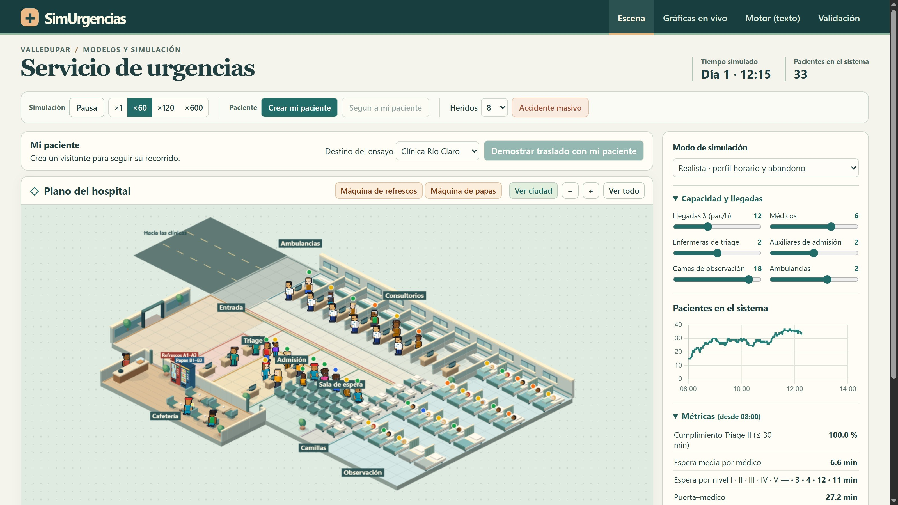
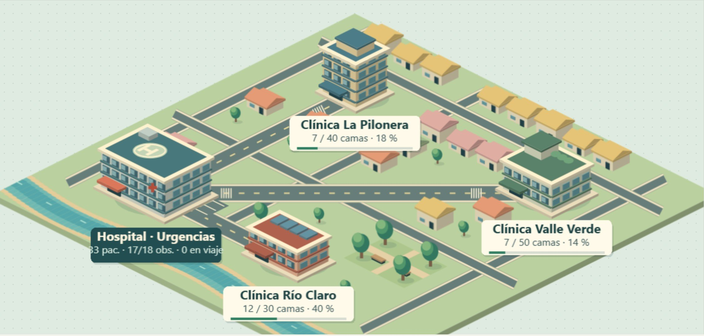
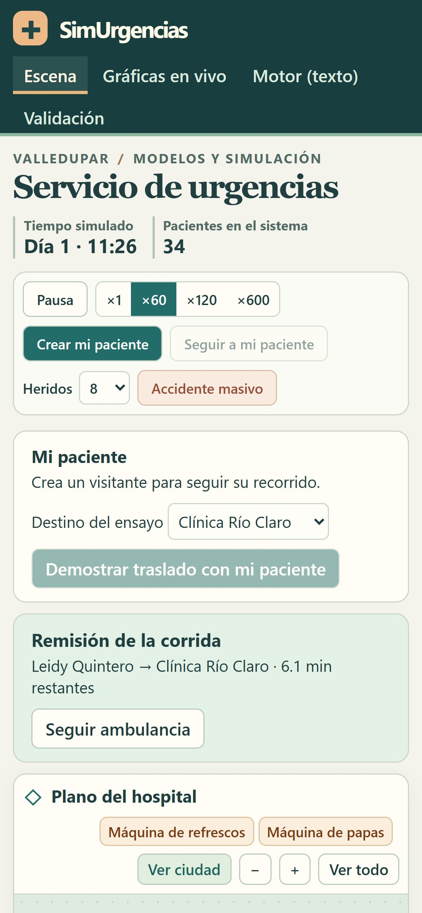
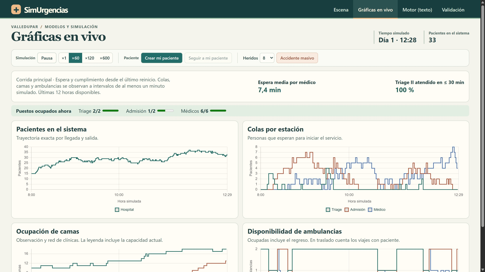
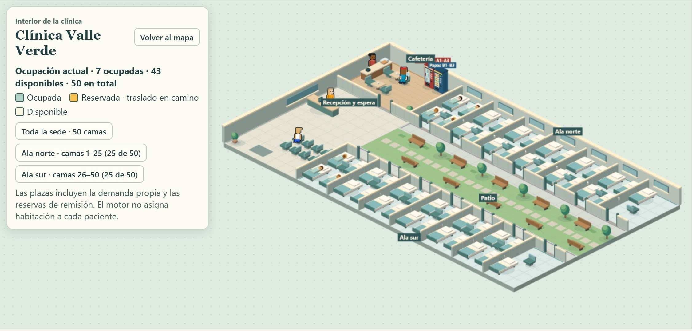

Los niveles IV y V pueden abandonar si la espera se alarga
Tiempo máximo para que un paciente Triage II vea al médico (Res. 5596 de 2015). ¿Cuántos médicos, auxiliares y camas hacen falta para cumplirlo?
General: desarrollar un simulador de eventos discretos del servicio de urgencias, validado analíticamente, para evaluar la capacidad necesaria para cumplir los tiempos de la Res. 5596 de 2015.
Modelar el flujo de pacientes como una red de colas con prioridad por triage.
Implementar un motor de eventos discretos con visualización interactiva.
Validar el modelo contra Erlang C, Cobham, Erlang B y la Ley de Little.
Evaluar escenarios de capacidad: médicos, camas y un accidente masivo.




